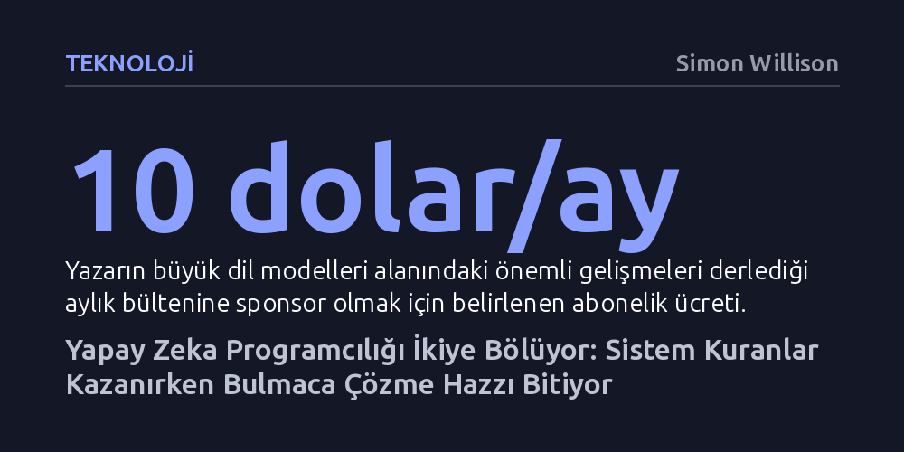

TEKNOLOJI · Simon Willison · 2026-10-20
Büyük dil modelleri, nihai sistemler kurmaya odaklanan yazılımcılar için eşsiz bir üretkenlik artışı sağlıyor. Buna karşılık, mesleğin özünü mantık bulmacalarını bizzat çözmekte bulanlar için ciddi bir tatmin kaybı yaratıyor.
Yapay zekanın yazılım dünyasındaki asıl kırılmayı teknik yeterlilikten ziyade, geliştiricilerin meslekten aldığı kişisel tatmin ve anlam duygusunda yaratacağını gösteriyor.

Programcılık, onlarca yıl boyunca modern iş dünyasının en tatmin edici ve ayrıcalıklı mesleklerinden biri olarak kabul edildi. Yazılımcılar günlerini karmaşık mantık bulmacalarıyla boğuşarak geçiriyor, çözülen problemin zorluğu arttıkça elde edilen maddi ve manevi kazanç da katlanıyordu. Sıradan insanların bu teknik dili ve mantıksal soyutlamaları kavramakta zorlanması, sektöre sarsılmaz bir uzmanlık tekeli ve yüksek bir pazarlık gücü kazandırmıştı.
Bu ayrıcalıklı konum, yazılımcılara sadece yüksek bir gelir sunmakla kalmadı; aynı zamanda çalışma biçimlerinde eşine az rastlanır bir özerklik alanı açtı. Şirketler bir problemle geldiğinde çözüm yöntemini, kullanılacak stratejiyi, işin teslim takvimini ve neyin mümkün olup olmadığını neredeyse tamamen programcılar belirliyordu. Ancak büyük dil modellerinin hayatımıza girmesi, bu korunaklı uzmanlık kalesinin kapılarını beklenmedik bir hızla araladı.
Büyük dil modellerinin kodlama yetenekleri geliştikçe, yazılımcı topluluğu içinde belirgin bir yol ayrımı ortaya çıktı. Eğer bir mühendis için asıl motivasyon kaynağı nihai olarak çalışan bir sistem inşa etmekse ve süreç boyunca karşılaşılan ara teknik engeller sadece aşılması gereken bürokratik pürüzlerden ibaretse, yapay zeka tükenmeyen bir üretkenlik kaynağı sunuyor. Bu profildeki yazılımcılar, modellerin sunduğu hız ve otomasyon sayesinde aylar sürecek projeleri günlere indirmenin heyecanını yaşıyor.
Buna karşılık mesleki doyumunu doğrudan o karmaşık mantık problemlerini adım adım kendi zihniyle çözmekten alanlar için tablo oldukça sarsıcı. Yazılımcının saatlerce kafa yorarak ulaştığı zarif algoritmaların artık modeller tarafından saniyeler içinde üretilmesi, 'problem çözme hazzını' işin merkezine koyanlar için derin bir mesleki anlam kaybı doğuruyor. Zihninin sınırlarıyla boğuşmayı seven bir programcı için yapay zeka bir kolaylaştırıcı değil, işin en keyifli kısmını elinden alan yabancılaştırıcı bir araca dönüşüyor.
Yazılım geliştirme pratiklerindeki dönüşüm sadece kod tamamlama araçlarıyla sınırlı kalmıyor; insan mühendislerin yerine geçen ya da onların adına hareket eden otonom yazılım ajanları giderek daha fazla sorumluluk üstleniyor. Bu ajanlar ve onların kendi içlerinde başlattıkları alt ajanlar, insan çalışanlarla aynı sistem yetkilerine ve erişim haklarına sahip olabiliyor; ancak insanlardan farklı olarak asla uyumuyor, dinlenmiyor ve yorulmuyorlar.
Sürekli çalışan ve bağımsız kararlar alabilen bu yeni nesil yazılımlar, güvenlik ve denetim mimarisinde köklü bir değişimi zorunlu kılıyor. Ajanların davranışlarını izlemek, onları geçici ve yalıtılmış güvenli çalışma ortamlarında sınırlandırmak, geleceğin yazılım mimarisinin en kritik başlıklarından biri haline geliyor. Yazılımcının rolü böylece satır satır kod yazan bir uygulayıcıdan, otonom sistemleri denetleyen bir operasyon liderine doğru evriliyor.
Yazılım dünyası, geçmişte sanayi devrimlerinin diğer meslek kollarında yarattığına benzer derin bir kimlik dönüşümünden geçiyor. Kodlama eyleminin kendisi bireysel bir zanaat olmaktan çıkıp yüksek düzeyli bir sistem orkestrasyonuna dönüşürken, mühendislerin mesleki kimliklerini yeniden tanımlaması gerekiyor.
Programcılık mesleği tamamen ortadan kalkmasa bile, bu işi yapanların elde ettiği tatminin niteliği bütünüyle değişecek. Bir problemi sıfırdan ve tek başına çözmüş olmanın getirdiği bireysel gururun yerini; yapay zeka modellerini, otonom ajanları ve karmaşık sistemleri bir arada yönetebilmenin getirdiği yönetsel ve stratejik beceriler alacak.